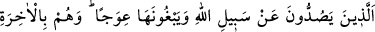
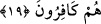

şeyler isnâd etmek suretiyle “yalan uydurandan daha zâlim kim olabilir?” Hiç kimse
bunlardan daha zâlim olamaz. “Onlar” yâni bu iftirâları atanlar “Rab’lerine
sunulacaklar.” Maksad, sual ve hesap için hazırlanan durak yerine götürülmeleri, Allah
Teâlâ kulları arasında hüküm verinceye kadar orada hapsedilmeleridir. Çünkü Allah bir
mekânda değildir ki O’na sunulsunlar. Maksad onların amellerinin sunulması olduğu
halde arzolunma onların kendilerine isnad edilmiştir. Çünkü bir amelde bulunan
kimsenin ameli ile -ki burada Allah’a iftirâ etmektir- birlikte sunulması, kendisi
olmadan sadece amelinin sunulmasından çok daha rezîl edici bir durumdur.
Melekler, peygamberler ve mü’minlerden ibâret olan “şahidler de” bu sunulma
sırasında: “İşte” kendilerine her türlü ihsanda bulunan, kendisine iftirâ ettikleri için
alınlarından perçemlerinden yapışacak olan “Rab’lerine karşı yalan söyleyenler
bunlardır.” “
bunlardır” kelimesi, yaptıkları kötü iş yüzünden küçümsendiklerini
ve tahkîr edildiklerini göstermektedir.
“İyi bilin ki Allah’ın lâneti” azâp ve gazabı mezkûr iftirayı yaparak zulmeden
“zâlimlerin üzerinedir.” diyecekler.”
Bir hadiste şöyle buyrulmuştur: “Kıyâmet günü Allah Teâlâ mü’min kuluna yaklaşıp
onu diğer insanlardan gizleyerek şöyle buyurur: “Kulum! Şu şu şu günahları biliyor
musun?” Mü’min de: “Evet, ya Rab ” diyerek günahlarını itiraf ve kabul edince
Allah Teâlâ: “Ben bu günahlarını dünyada iken gizli tutmuştum, bugün de
bağışlıyorum.”[115] buyurur ve ona sadece iyiliklerinin yazılı bulunduğu bir kitap/defter
verir.
Kâfirlerle münâfıklar hakkında ise şâhidler: “İşte Rablerine karşı yalan söyleyenler
bunlardır. İyi bilin ki Allah’ın lâneti zâlimlerin üzerinedir.” diyerek dünyada
yaptıkları ameller yüzünden onları rezil eder ve zulümleri yüzünden Allah katında
lânetlenmiş kişiler olduklarını beyan ederler.
Başka bir hadiste de şöyle buyrulur: “Kim duyurursa Allah da onu duyurur.”[116]
Yani amellerini gösteriş niyetiyle insanlara ızhâr edenlerin fâsid niyetlerini Allah da
kıyâmet günü açığa vurur ve şâhidler huzûrunda onları rezîl eder. Bu şâhidler ise hafaza
melekleridir. Bu şâhidlerin bütün melekler, hatta bütün yaradılanlar olduğu da
söylenmiştir.
Cenab-ı Hak daha sonra bu iftiracıları “Allah yolundan alıkoyma” ile tavsif ederek
şöyle buyuruyor:
19. Onlar ki Allah’ın yoluna engel olurlar ve onu eğriltmek isterler ve onlar